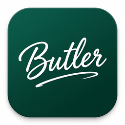

An open-core hardware automation ecosystem built to operate reliably through power losses and intermittent network drops. Simplifying human lives by automating physical activities locally.
"Smart devices shouldn't become dumb when the internet drops. Butler is an enterprise-grade, local-first IoT platform designed to remain fully operational and maintain state even under total network failure."
The Butler platform connects robust microcontroller firmware directly to a native mobile controller.
Hardware controller code built targeting ESP32 and ESP8266 microcontrollers. Resides directly on physical automation switches, relays, and motor pins.
The mobile app console designed for commissioning, configuration, local wireless handshakes, and remote telemetry dashboard sync.
Butler operates under a strict hierarchical fallback model, prioritizing local survival over cloud dependency.
Optional cloud sync. Streams logs and configurations to standard cloud platforms when network is stable.
Control and metrics stream locally through a local Linux IoT Hub (iothub.local) via MQTT protocol.
If Wi-Fi drops, the local RTC chip maintains perfect cron clock cycles, executing board schedules offline.
In total isolation, a direct SoftAP/BLE connection retrieves local diagnostics and uploads configs directly.
Preventing digital twin drift. Traverses and calculates exact target state dynamically.
Listens for isolated triggers (e.g. "Relay On"). If a power cut or connection drop occurs at trigger time, the device boots into the wrong state, drifting completely from cloud configurations and skipping crucial daily cycles.
On boot, NTP sync, or schedule updates, the firmware runs a Full-Day Simulation. It traverses the stored NVS cron configurations, aggregates chronological changes up to the current second, and enforces the correct target state immediately.
How Butler Manager securely commissions hardware controllers without cloud dependencies.
User scans the hardware board's factory QR code using Butler Manager to retrieve board credentials and POP keys.
The mobile app establishes a direct, secure local handshake with the controller using Bluetooth Low Energy (BLE) or SoftAP.
The app transmits localized Wi-Fi configurations, local NTP target addresses, MQTT endpoint credentials, and OTA parameters.
The app synchronizes the current UTC timestamp and uploads cron schedules directly into the ESP32 non-volatile storage (NVS).
The device reboots, connects to the local broker (iothub.local), and subscribes to BUTLER_<MAC>/nvCron/wr topics for real-time adjustments.
Butler dynamically scales down or up to target different physical automation node architectures.
Monitors and logs physical events locally in flash storage. Automatically streams buffered logs to local hubs or cloud backends when network links are restored.
Triggers scheduled physical switches and relay changes locally. Fetches and updates new cron configurations from the network whenever links become active.
Combines sensor telemetry with local trigger actions directly on the device. Runs fully independent logic loops offline and syncs control algorithms when connected.
Engineered specifically for environments where connection cuts are common but operations are critical.
Solar-powered sensor nodes deployed across remote agricultural fields, syncing logs when farm vehicles with satellite hotspot links pass by.
Local automations continue executing even during router outages or power resets, completely shielding the property from internet or cloud provider shutdowns.
Bespoke controller setups for offline sensor gathering in extreme settings (e.g., deep sea research nodes, dense forest micro-climates, and deserts).
High-security configurations where operational commands and telemetry are too critical to ever be exposed to the public internet.
Butler is an open-core platform. We customize hardware and firmware setups to automate physical workflows for commercial operations.
Board layout modifications tailored to custom physical form factors, custom relay specifications, and direct integration of specialized current, temperature, or humidity sensors.
Bespoke firmware logic including custom PWM power modulation profiles, complex sensor thresholds, hardware encryption chips, and industrial Modbus / RS485 communication protocols.
Branded builds of Butler Manager for corporate identity (custom logos, preset local hub DNS end-points, strict internal networking rules, and pre-packaged APK distributions).
Deploying customized on-premise local Linux appliances pre-loaded with secured MQTT brokers, local NTP chronometers, and firmware FOTA update managers for industrial sites.
Support agreements covering periodic firmware security patches, on-site diagnostics synchronization, firmware maintenance cycles, and direct engineering help.
Have specialized requirements for fail-safe automation, state preservation, or custom embedded controllers? Let's discuss custom engineering specifications.
Email Customization Support Niyogi Labs
Niyogi Labs